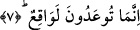
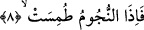

topluluk ortaya çıkacak, onların nişanı ve alâmeti başlarının ortasını traş
etmeleridir.’ buyurmuştu. Hz. Ömer (r.a.) Irak emiri Mûsa el-Eş’arî’ye: “Bu Sâbîğ
denilen adamı bir sene sürgün edin, onunla oturun ve ona gerçeği anlatın.” ifâdelerinin
yer aldığı bir mektup yazdı. Bu bir sene sonunda Sâbîğ tövbe etti ve özür diledi. Hz.
Ömer (r.a.) onun özrünü kabul etti.
Kamus’ta ifâde olunduğuna göre Sâbîğ insanları ifsad eder, üstü kapalı sözlerle ve
sorularla kafalarını karıştırırdı. Hz. Ömer onu Basra’ya sürmüştür.
7. Bilin ki size vaad olunan şey gerçekleşecek!
Bu ifâde yukarıda geçen kasem’in cevabıdır. Bir başka ifâdeyle yukarıda üzerlerine
yemin edilerek pekiştirilen gerçek, bu parantez içindeki ifâdedir. Yâni burada denmek
isteniyor ki; kıyâmetin geleceğine dâir size yapılan vaad hiç çâresi yok mutlaka
olacaktır.
Âyette işâret edilen “vaad edilen gerçek” kıyâmetin gelişidir. Çünkü bu âyetin hemen
ardında zikredilen olaylar kıyâmet gününün alâmeti olan olaylardır. Vaad edilen
gerçeğin kıyâmet olduğunu buradan anlıyoruz.
Kelbî diyor ki: Buradaki vaadden maksad herkesin başına gelen hayır ve şerdir. et-
Te’vilat en-Necmiyye’de bu âyet-i kerîme başka türlü anlaşılıyor: Allah’tan kıyâmet
gününün geleceğine dâir yapılan vaad, ehl-i mârifet, ehl-i şuhud, zevk ve vücûd erbabı
için kesinlikle meydana gelecektir. Buna karşılık hicab ve ihticab ehline gelince, onlar
hicabın kaldırılmasına, perdenin açılmasına hazır iseler, bu meydana gelecektir. Bu
gerçeğe Allah Kasas ve Rahman sûrelerinde şu şekilde işâret buyurmaktadır: “O’nun
zâtından başka herşey yok olacaktır.” (el-Kasas, 28/88) Yâni derhal yok olacaktır. Bir
diğer âyet-i kerîme ise az önce işâret ettiğimiz üzere Rahman sûresindedir. Allah orada
şöyle buyurur: “Yeryüzünde bulunan her canlı yok olacak.” (er-Rahman, 55/26) Yâni
yeryüzünde fânî olan her canlı bakada fânî olacaktır. Çünkü bir kural vardır. Mukayyed
kayıtlı ifâde mutlak ifâdenin mutlaklığı içinde kaybolup gider. Tıpkı yıldızın ışığının
güneşin ışığı içinde yok olup gitmesi; yarımlığın, üçte birliğin, dörtte birliğin iki, üç,
dört sayısı içinde kaybolup gitmesi gibi.
Yukarıdaki âyetlerin ardından Allah kıyâmet gününün eserlerinin ve olaylarının ortaya
çıkmasından ve şakavet/bedbaht olacak kimseler için dalâletlerinin meydana
gelmesinden söz ediyor.